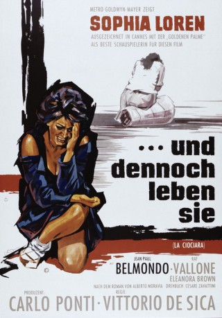
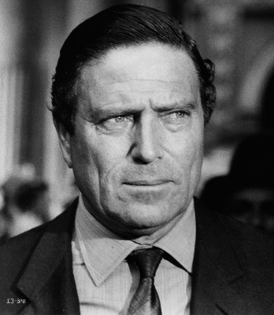

#11065 Und dennoch leben sie
Alternativ: Two Women (Englischer Titel)
Auszeichnungen: 1 Oscars gewonnen 1 GoldenGlobes gewonnen 1 BAFTA-Awards gewonnen
 
 IMDB-Wertung: 7.9 / 10
IMDB-Wertung: 7.9 / 10  Metascore: 0
Metascore: 0 
Im Jahre 1943 wird Italiens Hauptstadt Rom durch die Alliierten sukzessive zerstört und bombadiert. In diesem Chaos lebt die junge und vermögende Witwe Cesira mit ihrer 13 jährigen Tochter Rosetta und betreibt einen kleinen Kaufladen. Als die Wucht einer Detonation ihr Geschäft, sowie einige Kunden in Mitleidenschaft zieht, spielt sie mit dem Gedanken, Rom und damit die Gefahrenzone zu verlassen. Sie entscheidet sich dafür und beginnt einen langen und kräftezehrenden Marsch zu ihrem Heimatdorf. Unterwegs stellen sie fest, dass der Krieg jedoch auch das Umland erreicht hat und machen Bekanntschaft mit dem jungen Studenten Michele. Als sich zwischen dem Akademiker und Cesira eine ernsthafte Liebesbeziehung anbahnt, fallen deutsche Truppen in das Dorf ein.
Jahr: 1960
Dauer: 100 Minuten
FSK: 18
Land: Italien Studio: MGMTonspuren:
Untertitel:
Auflösung: 720p (1280x688) Größe: 4392 MB
Genre: Drama, Krieg
Regisseur: Vittorio De Sica
Drehbuch: Alberto Moravia, Cesare Zavattini, Vittorio De Sica
Soundtrack: Armando Trovajoli
Darsteller:
 Sophia Loren als Cesira
Sophia Loren als Cesira Jean-Paul Belmondo als Michele Di Libero
Jean-Paul Belmondo als Michele Di Libero- Eleonora Brown als Rosetta
- Carlo Ninchi als Filippo, il padre di Michele
 Andrea Checchi als Un fascista
Andrea Checchi als Un fascista- Emma Baron als Maria
 Curt Lowens als Ufficiale tedesco batteria contraerea
Curt Lowens als Ufficiale tedesco batteria contraerea Luciano Pigozzi als Scimmione, il capo miliziano
Luciano Pigozzi als Scimmione, il capo miliziano-  Raf Vallone als Giovanni
- Renato Salvatori als Florindo, il camionista (uncredited)
- Pupella Maggio als Una contadina
- Bruna Cealti als Una sfollata
- Antonella Della Porta als La madre impazzita
- Mario Frera als Peppuccio
- Franco Balducci als Il tedesco nel pagliaio
- Luciana Cortellesi als
- Tony Calio als
- Remo Galavotti als
- Elsa Mancini als
- Giuseppina Ruggeri als
- Luigi Terribile als
- Antonio Gastaldi als
- Carolina Carbonaro als
- Alberto Castaldi als Lawyer (uncredited)
- Ettore Mattia als Il passeggero sul treno (uncredited)
- Vincenzo Musolino als Il piccolo Alessandro (uncredited)
Datei: X:\FSK18-1900-1999\Und dennoch leben sie (1960, FSK18, 1280x688).mkv seit 24.04.2019
Festplatte: FSK18
 Es gibt insgesamt 108 Filme in der Gruppe 'FSK18-1900-1999'
Es gibt insgesamt 108 Filme in der Gruppe 'FSK18-1900-1999'